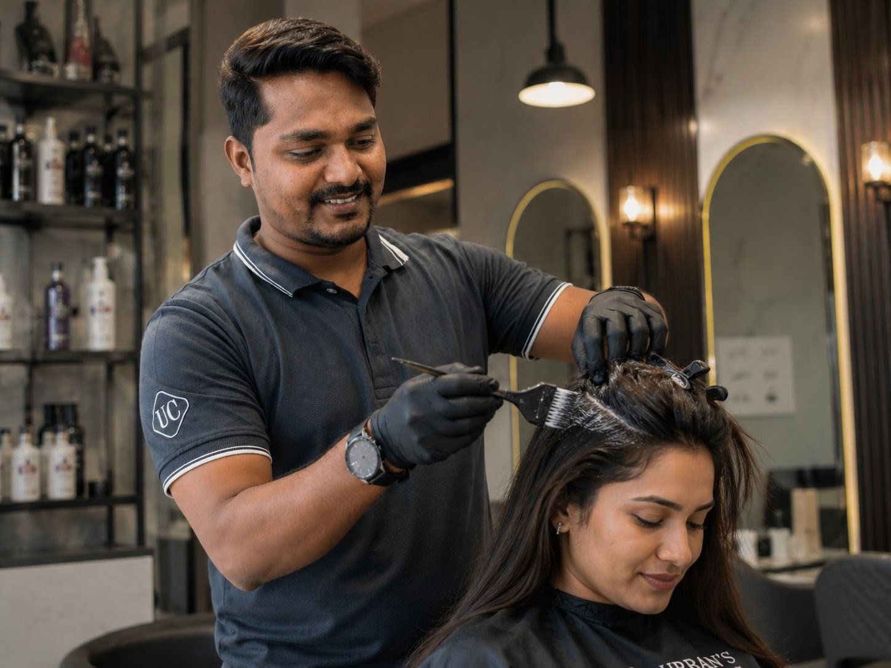
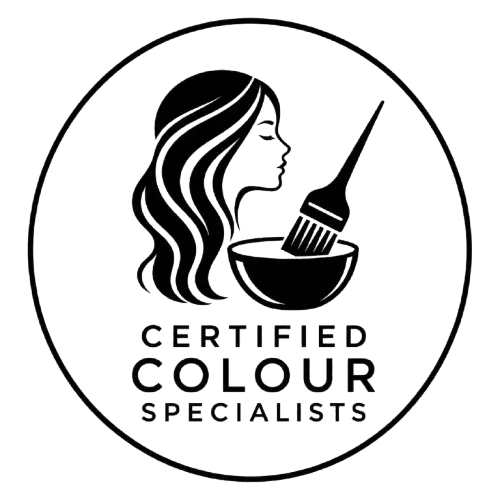

Premium Hair Colour
Vibrant, Long-Lasting Hair Colour at Urban Cuts Family Salon
From global colour and dimensional highlights to precise root touch-ups, our stylists work with premium INOA and Majirel colour to give you rich, natural-looking results — for men and women alike.

Service Overview
Colour That's Chosen for You, Not Just Applied
Great hair colour starts long before the brush touches your hair. Our stylists assess your natural base, hair condition and the look you want before recommending a colour brand, technique and tone that will actually suit you — and hold up well over time.
We work exclusively with premium, salon-professional colour — INOA, L'Oréal's ammonia-free permanent colour, and Majirel, a classic permanent colour known for rich, vibrant tones. Whether you need a full global colour, dimensional highlights, or a quick root touch-up, there's an option built around your hair length and regrowth.
Our Hair Colour Menu
Choose Your Colour Service
Every colour service at Urban Cuts Family Salon uses genuine INOA or Majirel product, matched to your hair length and the coverage you need.
-
INOA Colour
Ammonia-free permanent colour for natural-looking grey coverage and tone, formulated for men.
-
Majirel Colour
Classic permanent colour with rich, long-lasting tone, formulated for men.
-
Global INOA
Full-head ammonia-free colour using INOA for even, natural-looking tone root to tip.
-
Global Majirel
Full-head colour using Majirel for rich, vibrant, long-lasting results.
-
Global Highlights
All-over dimensional highlights for a sun-kissed, multi-tonal finish.
-
Highlights Per Strip
Individually priced highlight strips for a subtler, more targeted look.
-
Touch Up 1" - INOA
Root touch-up with INOA for up to 1 inch of new growth.
-
Touch Up 2" - INOA
Root touch-up with INOA for up to 2 inches of new growth.
-
Touch Up 1" - Majirel
Root touch-up with Majirel for up to 1 inch of new growth.
-
Touch Up 2" - Majirel
Root touch-up with Majirel for up to 2 inches of new growth.
The Benefits
Why Our Hair Colour Holds Up
-
Genuine Premium Colour
Only authentic INOA and Majirel product is used, never diluted or mixed brands.
-

Certified Colour Specialists
Stylists trained specifically in colour technique, tone-matching and grey coverage.
-
Ammonia-Free Option
INOA offers a gentler, ammonia-free alternative for sensitive scalps.
-
Patch Test First
Every new colour client is offered a patch test before their appointment.
Who It's For
Who Is This Service For?
-
Grey Coverage Seekers
INOA and Majirel global colour for natural-looking, even grey coverage.
-
First-Time Colour Clients
Guided consultation and patch testing before your first colour service.
-
Highlight & Dimension Lovers
Global highlights or per-strip highlights for a lived-in, multi-tonal look.
-
Regular Touch-Up Clients
Quick 1" or 2" root touch-ups to keep colour looking fresh between full services.
How It Works
Our Hair Colour Process
-
01
Consultation
We discuss your desired tone, hair history and choose between INOA or Majirel.
-
02
Patch Test
Recommended 48 hours ahead, especially for first-time colour clients.
-
03
Colour Application
Global colour, highlights or touch-up applied with precise sectioning.
-
04
Processing Time
Colour develops for the right duration to achieve accurate, even tone.
-
05
Wash, Style & Aftercare
A finishing wash, blow-dry and colour-care tips to protect your new tone.
Trusted By Baner
Why Choose Urban Cuts Family Salon for Hair Colour
- Genuine INOA & Majirel product, never diluted
- Colour specialists trained in tone-matching & grey coverage
- Patch testing offered before every colour service
- Dedicated colour options for men
- Precise, length-based pricing for root touch-ups
- Consistently rated 5.0 across 141+ Google reviews
Have Questions?
Hair Colour FAQs
What is the difference between INOA and Majirel colour?
INOA is an ammonia-free permanent colour that's gentler on hair and scalp, while Majirel is a classic permanent colour known for rich, long-lasting tones. Our stylists help you choose based on your hair condition and colour goals.
Is a patch test mandatory before hair colour?
Yes, we recommend a patch test at least 48 hours before any colour service to check for sensitivity, especially for first-time colour clients.
How long does hair colour typically last?
Global colour generally lasts 6 to 8 weeks before roots become noticeable, while highlights can last 8 to 12 weeks depending on your natural hair colour and growth rate.
How often should I get a root touch-up?
Most clients book a touch-up every 4 to 6 weeks as new growth becomes visible, choosing between a 1 inch or 2 inch touch-up depending on regrowth.
Can I switch between Majirel and INOA colour?
Yes, our stylists can assess your existing colour and hair condition and guide you on switching brands safely during your next appointment.
Do you offer hair colour specifically for men?
Yes, we offer dedicated INOA and Majirel colour services for men, including grey coverage and natural-looking tones.
Ready for a Colour You'll Love?
Book your hair colour appointment today and experience Baner's most premium family salon.
Visit Us
Find Urban Cuts Family Salon in Baner
Shop 10, Nancy Hill View,Baner Annex, Baner,
Pune, Maharashtra 411045
Phone: 88620 70100
Business Hours
- Monday - Sunday10:00 AM - 9:30PM